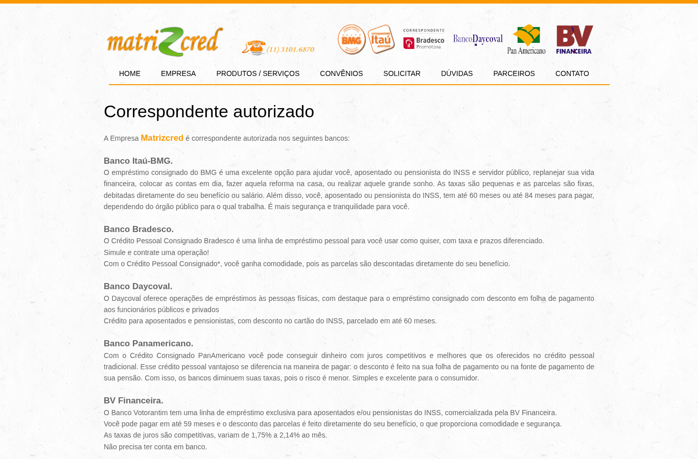
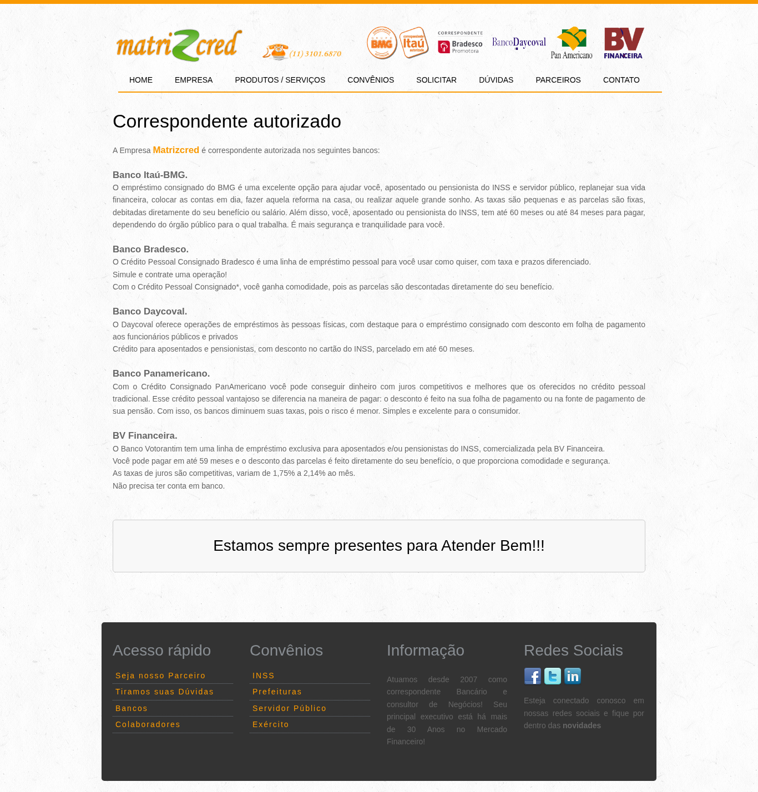

Sistema de Investigação de Marca e Identidade Online
https://www.matrizcred.com.br/bancos.html
Prioridade: MEDIUM · Cenário: B_AMBIGUOUS_COMMUNICATION · Revisão humana: PENDING
O estabelecimento opera legitimamente como promotora/correspondente multibancos sob marca própria (Matrizcred). Contudo, utiliza o logotipo legado da BV Financeira no cabeçalho e omite requisitos formais de transparência (CNPJ e indicação de ouvidoria), configurando vínculo ambíguo à luz da Resolução CMN nº 4.935/2021. [Revisor: CONFIRM] A página pertence a uma promotora de crédito/correspondente bancário (Matrizcred) atuando em contexto multibancos. O site utiliza o logotipo legado da BV Financeira no topo e promove produtos de crédito consignado vinculados à BV, declarando-se correspondente autorizada, porém omite a disponibilização de CNPJ próprio e os contatos de ouvidoria das instituições representadas, em desacordo com as exigências da Resolução CMN nº 4.935/2021. Configura-se adequadamente como REVIEW_REQUIRED.


| Ref | Tipo | Local | Conteúdo |
|---|---|---|---|
| E-URL | domain | url | URL final: https://www.matrizcred.com.br/bancos.html (domínio: www.matrizcred.com.br) |
| E-DISC-001 | text | search_index | Índice de busca (grounding): matrizcred.com.br — **URL:** `https://matrizcred.com.br` | **Como utiliza a marca:** Promove linhas de crédito pessoal e consignado vinculado à BV Financeira / Banco Votorantim |
| E-SHOT-VIEWPORT | screenshot | viewport | evidence/C377175cd1a/attempt-1/viewport.png (sha256 086a6543c917d606…) |
| E-SHOT-FULL | screenshot | page | evidence/C377175cd1a/attempt-1/fullpage.png (sha256 bdd69b513e4ebc58…) |
| E-TITLE | title | head | MatriZcred - Empréstimos para Aposentados e Pensionistas do INSS |
| E-HEAD-1 | heading | page | Correspondente autorizado |
| E-HEAD-2 | heading | page | Estamos sempre presentes para Atender Bem!!! |
| E-HEAD-3 | heading | page | Acesso rápido |
| E-HEAD-4 | heading | page | Convênios |
| E-HEAD-5 | heading | page | Informação |
| E-HEAD-6 | heading | page | Redes Sociais |
| E-FOLD | text | viewport (acima da dobra) | Home Empresa Produtos / Serviços Convênios Solicitar Dúvidas Parceiros Contato Correspondente autorizado A Empresa Matrizcred é correspondente autorizada nos seguintes bancos: Banco Itaú-BMG. O empréstimo consignado do BMG é uma excelente opção para ajudar você, aposentado ou pensionista do INSS e servidor público, replanejar sua vida financeira, colocar as contas em dia, fazer aquela reforma na casa, ou realizar aquele grande sonho. As taxas são pequenas e as parcelas são fixas, debitadas diretamente do seu benefício ou salário. Além disso, você, aposentado ou pensionista do INSS, tem até 60 meses ou até 84 meses para pagar, dependendo do órgão público para o qual trabalha. É mais segurança e tranquilidade para você. Banco Bradesco. O Crédito Pessoal Consignado Bradesco é uma linha de empréstimo pessoal para você usar como quiser, com taxa e prazos diferenciado. Simule e contrate uma operação! Com o Crédito Pessoal Consignado*, você ganha comodidade, pois as parcelas são descontadas diretamente do seu benefício. Banco Daycoval. O Daycoval oferece operações de empréstimos às pessoas físicas, com destaque para o empréstimo consignado com desconto em folha de pagamento aos funcionários públicos e privados Crédito para aposentados e pensionistas, com desconto no cartão do INSS, parcelado em até 60 meses. Banco Panamericano. Com o Crédito Consignado PanAmericano você pode conseguir dinheiro com juros competitivos e melhores que os oferecidos no crédito pessoal tradicional. Esse crédito pessoal vantajoso se diferencia na maneira de pagar: o desconto é feito na sua folha de pagamento ou na fonte de pagamento de sua pensão. Com isso, os bancos diminuem suas taxas, pois o risco é menor. Simples e excelente para o consumidor. BV Financeira. O Banco Votorantim tem uma linha de empréstimo exclusiva para aposentados e/ou pensionistas do INSS, comercializada pela BV Financeira. Você pode pagar em até 59 meses e o desconto das parcelas é feito diretamente do seu benefício, o que |
| E-IMG-1 | image | page (acima da dobra) | imagem alt='' src=https://www.matrizcred.com.br/img/logo.png (240x80, acima da dobra) |
| E-TXT-001 | text | page | PARCEIROS |
| E-TXT-002 | text | page | Correspondente autorizado |
| E-TXT-003 | text | page | A Empresa Matrizcred é correspondente autorizada nos seguintes bancos: |
| E-TXT-004 | text | page | Banco Itaú-BMG. |
| E-TXT-005 | text | page | Banco Bradesco. |
| E-TXT-006 | text | page | Banco Daycoval. |
| E-TXT-007 | text | page | Banco Panamericano. |
| E-TXT-008 | text | page | Com o Crédito Consignado PanAmericano você pode conseguir dinheiro com juros competitivos e melhores que os oferecidos no crédito pessoal tradicional. Esse crédito pessoal vantajoso se diferencia na maneira de pagar: o desconto é feito na sua folha de pagamento ou na fonte de pagamento de sua pensão. Com isso, os bancos diminuem suas taxas, pois o risco é menor. Simples e excelente para o |
| E-TXT-009 | text | page | BV Financeira. |
| E-TXT-010 | text | page | O Banco Votorantim tem uma linha de empréstimo exclusiva para aposentados e/ou pensionistas do INSS, comercializada pela BV Financeira. |
| E-TXT-011 | text | page | Não precisa ter conta em banco. |
| E-TXT-012 | text | page | Seja nosso Parceiro |
| E-TXT-013 | text | page | Bancos |
| E-TXT-014 | text | page | Atuamos desde 2007 como correspondente Bancário e consultor de Negócios! Seu principal executivo está há mais de 30 Anos no Mercado Financeiro! |
| Dimensão | Sinal | Achado | Refs |
|---|---|---|---|
| VISUAL_IDENTITY | NEUTRAL | Identidade visual própria da Matrizcred predomina no layout geral, embora exiba no cabeçalho a marca gráfica histórica da BV Financeira ao lado de outros bancos. | E-SHOT-VIEWPORT E-IMG-1 |
| DECLARED_COMMERCIAL_IDENTITY | NEUTRAL | O site identifica-se comercialmente como Matrizcred, mas não apresenta razão social formal ou CNPJ visível na página. | E-TITLE E-TXT-003 E-SHOT-FULL |
| CORRESPONDENT_TRANSPARENCY | CONFUSION | Afirma ser correspondente autorizada para diversos bancos (incluindo BV Financeira), mas não atende integralmente aos requisitos de transparência e identificação societária da Resolução CMN 4.935/2021. | E-HEAD-1 E-TXT-002 E-TXT-003 |
| INSTITUTIONAL_LANGUAGE | LEGITIMATE | Comunicação em terceira pessoa ao descrever as linhas de crédito da BV Financeira e de outras instituições financeiras. | E-TXT-010 |
| LOGO_USAGE | CONFUSION | Exibição do logotipo legado da BV Financeira (B vermelho e V estilizado) no cabeçalho junto aos logos de outros parceiros bancários. | E-SHOT-VIEWPORT E-SHOT-FULL |
| SERVICE_JOURNEY | NEUTRAL | A página funciona como catálogo informativo dos bancos conveniados e opções de crédito consignado. | E-FOLD E-SHOT-FULL |
| CONTACT_CHANNELS | NEUTRAL | Disponibiliza telefone fixo próprio no cabeçalho e links de redes sociais no rodapé. | E-SHOT-VIEWPORT E-SHOT-FULL |
| CONSUMER_CONFUSION | NEUTRAL | O contexto multibancos minimiza o risco de falsa impressão de canal direto do Banco BV, mas o uso de logo defasado e a ausência de dados cadastrais geram ambiguidade regulatória. | E-SHOT-VIEWPORT E-TXT-003 |
O estabelecimento opera legitimamente como promotora/correspondente multibancos sob marca própria (Matrizcred). Contudo, utiliza o logotipo legado da BV Financeira no cabeçalho e omite requisitos formais de transparência (CNPJ e indicação de ouvidoria), configurando vínculo ambíguo à luz da Resolução CMN nº 4.935/2021.
Há declaração de correspondente ou de parceria, sem identificação suficiente ou sem confirmação cadastral.
| Tipo | Valor | Ref | Contexto |
|---|---|---|---|
| domain | matrizcred.com.br | E-URL | |
| correspondent_declaration | Correspondente autorizado | E-HEAD-1 | Correspondente autorizado |
| correspondent_declaration | correspondente Bancário | E-TXT-014 | Atuamos desde 2007 como correspondente Bancário e consultor de Negócios! Seu principal executivo está há mais de 30 Anos no Mercado Financeiro! |
Mapeamento indicativo para apoio à auditoria. Não constitui conclusão regulatória; a decisão definitiva pertence à auditoria.
Fonte: NORMATIVE
Art. 14. O contrato de correspondente deve estabelecer: [...] II - vedação à utilização, pelo contratado, de logomarca ou de outros atributos que sejam similares aos adotados pela instituição contratante em suas agências, postos de atendimento, sítio eletrônico na internet, aplicativo ou outras plataformas de comunicação em rede;
Hipótese: Uso de logomarca, uso excessivo/desproporcional ou de atributos similares aos adotados pela contratante em seus canais. Aplicável somente se confirmado o vínculo de correspondente.
Evidência observada: E-SHOT-FULL E-SHOT-VIEWPORT
Informação faltante:
Fonte: NORMATIVE
Art. 14. O contrato de correspondente deve estabelecer: [...] III - divulgação ao público, pelo contratado, de sua condição de prestador de serviços à instituição contratante, identificada pelo nome com que é conhecida no mercado, com descrição dos produtos e serviços oferecidos e canais de contato da instituição contratante, inclusive de sua ouvidoria, em local visível, em destaque e em formato legível, por meio de: a) sítio eletrônico do correspondente na internet, acessível na página inicial; b) aplicativo e outras plataformas de comunicação em rede do correspondente; [...]
Hipótese: Há declaração da condição de correspondente/prestador, mas outros elementos da página (apresentação da marca) podem contradizê-la ou reduzir seu efeito (destaque, legibilidade e identificação da contratante a verificar). Aplicável somente se confirmado o vínculo de correspondente.
Evidência observada: E-HEAD-1 E-SHOT-FULL E-TXT-002 E-TXT-003 E-TXT-014
Informação faltante:
Fonte: NORMATIVE
Art. 3º O correspondente atua por conta e sob as diretrizes da instituição contratante, que assume inteira responsabilidade pelo atendimento prestado aos clientes e usuários por meio do contratado.
Evidência observada: —
Limitações: requisitos contratuais/internos não fornecidos: mapeamento limitado ao texto normativo
Decisão: CONFIRM → REVIEW_REQUIRED / MEDIUM
A página pertence a uma promotora de crédito/correspondente bancário (Matrizcred) atuando em contexto multibancos. O site utiliza o logotipo legado da BV Financeira no topo e promove produtos de crédito consignado vinculados à BV, declarando-se correspondente autorizada, porém omite a disponibilização de CNPJ próprio e os contatos de ouvidoria das instituições representadas, em desacordo com as exigências da Resolução CMN nº 4.935/2021. Configura-se adequadamente como REVIEW_REQUIRED.
| Tema | Severidade | Questionamento | Refs |
|---|---|---|---|
| contradictory_evidence | LOW | Coexistem declaração de correspondente e indícios de confusão. | E-FOLD E-HEAD-1 E-TXT-002 |
| Fonte | Consulta / hipótese | URL original | Título / trecho |
|---|---|---|---|
| grounding | Objetivo: Uso de expressões de oficialidade ('parceiro oficial', 'representante', 'correspondente autorizado', 'agência BV').
Execute no Google Search as seguintes consultas (dorks):
- ("parceiro oficial" OR "parceiros autorizados" OR "correspondente autorizado" OR "correspondente bancário autorizado") ("Banco BV" OR "bv financeira") -site:bv.com.br -site:bancobv.com.br -site:bvfinanceira.com.br -site:bvinvestimentos.com.br -site:napista.com.br -site:bvopen.com.br -site:meufinanciamentosolar.com.br -site:votorantim.com.br -site:vam.com.br -site:reclameaqui.com.br -site:jusbrasil.com.br -site:jus.br
- ("representante" OR "agência BV" OR "agência Banco BV" OR "canal oficial" OR "site oficial") ("Banco BV" OR "bv financeira") financiamento -site:bv.com.br -site:bancobv.com.br -site:bvfinanceira.com.br -site:bvinvestimentos.com.br -site:napista.com.br -site:bvopen.com.br -site:meufinanciamentosolar.com.br -site:votorantim.com.br -site:vam.com.br -site:reclameaqui.com.br -site:jusbrasil.com.br -site:jus.br
Liste de forma abrangente as páginas públicas encontradas (até 12 resultados distintos), informando para cada uma o nome do estabelecimento/perfil, a URL e como a marca é utilizada (destaque visual, título, feirão, simulador, redes sociais e se há ou não identificação clara de CNPJ e condição de correspondente bancário). H4-official-language | https://www.matrizcred.com.br/bancos.html | matrizcred.com.br **URL:** `https://matrizcred.com.br` | **Como utiliza a marca:** Promove linhas de crédito pessoal e consignado vinculado à BV Financeira / Banco Votorantim |
Original: https://www.matrizcred.com.br/bancos.html
Final: https://www.matrizcred.com.br/bancos.html
| Artefato | Caminho | SHA-256 | Bytes |
|---|---|---|---|
| screenshot_viewport | evidence/C377175cd1a/attempt-1/viewport.png | 086a6543c917d606798e85865f799d698db920800addc0105d1e07533a715f70 | 610519 |
| screenshot_full | evidence/C377175cd1a/attempt-1/fullpage.png | bdd69b513e4ebc58d7f740d04244ec0cfa57389b1764d330aaf0d4b6d715e88d | 836726 |
| html | evidence/C377175cd1a/attempt-1/page.html.txt | 1e385315ce0063a872fbba12ef0a2f55dc00fa13bdbe6c879a51091c2a4aefeb | 10552 |
| text | evidence/C377175cd1a/attempt-1/text.txt | 05010b2775dea847b303043b61211d1ba5f2f259140bbbae5548663e4296b774 | 2646 |
| page_data | evidence/C377175cd1a/attempt-1/page.json | c0748d71824119aec87e82c865c946a6f6b1ab3b650caa83be8cc70302ac22ba | 8739 |
| Quando | De | Para | Nota |
|---|---|---|---|
| 2026-11-25T18:12:07+00:00 | DISCOVERED | QUEUED | prioritised (score 2.0) |
| 2026-11-25T19:04:28+00:00 | QUEUED | COLLECTING | |
| 2026-11-25T19:04:34+00:00 | COLLECTING | COLLECTED | |
| 2026-11-25T19:04:34+00:00 | COLLECTED | ANALYZING | |
| 2026-11-25T19:05:12+00:00 | ANALYZING | REVIEWING | |
| 2026-11-25T19:07:49+00:00 | REVIEWING | COMPLETED |